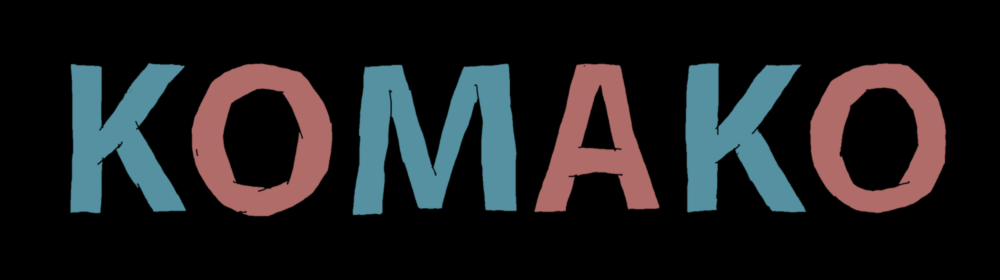

Description
Komako is a narrative exploration game in which a young orphan girl, Komako, happens upon a mysterious, abandoned theme park. As she explores the park's strange derelict premises, she quickly encounters one of the park's inhabitants and learns of a long-standing feud and a quest unfulfilled. Embark on a journey with Komako as she navigates the intricacies of a place and people long forgotten. Can Komako mend the rift between them to once again turn the park into a place of happiness and joy, or is there more to this quest than it seems?
Development
Starting together in late 2018, Komako is a collaboration project between artist/animator Balázs Ronyai and development studio Half Past Yellow.
Images


{kind=link}
Logo & Icon
{kind=link}
{kind=link}
{kind=link}
Additional Links
- @ronyaib
- Balázs Ronyai's personal twitter account.
- Half Past Yellow
- Half Past Yellow studio website.
Team & Repeating Collaborators
- Balázs Ronyai
- Art Director
- Gian Dbeis
- Producer
- Remy Stuurwold
- Technical Director
- Max Wrighton
- Programmer
- Casper Petersen
- Artist
Contact
- Inquiries
- komako@halfpastyellow.com
- https://twitter.com/komakogame
- Web
- komakogame.com